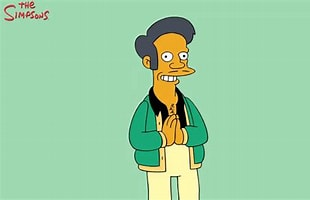

Apu
Apu Nahasapeemapetilon is one of Springfield’s most recognizable side characters. He is the hardworking owner of the Kwik‑E‑Mart, known for his catchphrase “Thank you, come again!” and his extremely long work shifts.
Ääninäyttelijä

Ääniklippit
